Guilherme Dunguel
Desenvolvedor Front-End


Quem é Guilherme?
Desde pequeno sempre gostei de tecnologia. Em 2021 me descobri na área e comecei meus estudos em agosto. Desde então venho fazendo projetos pessoais totalmente focados em Desenvolvimento Web
Meus objetivos
Atualmente focando os estudos em JavaScript e ReactJS, pretendo melhorar meus conhecimentos de Web, futuramente estudar TypeScript e NextJS. também pretendo estudar Python para fazer algumas automações.
Meu futuro
Espero, no futuro, poder contribuir na evolução da tecnologia e poder ver o meu código sendo utilizado por milhares de pessoas.

LOCALIZAÇÃO
Campo Grande, Rio de Janeiro, RJ
guilhermedunguel@gmail.com
(+55) 21 98794-3315